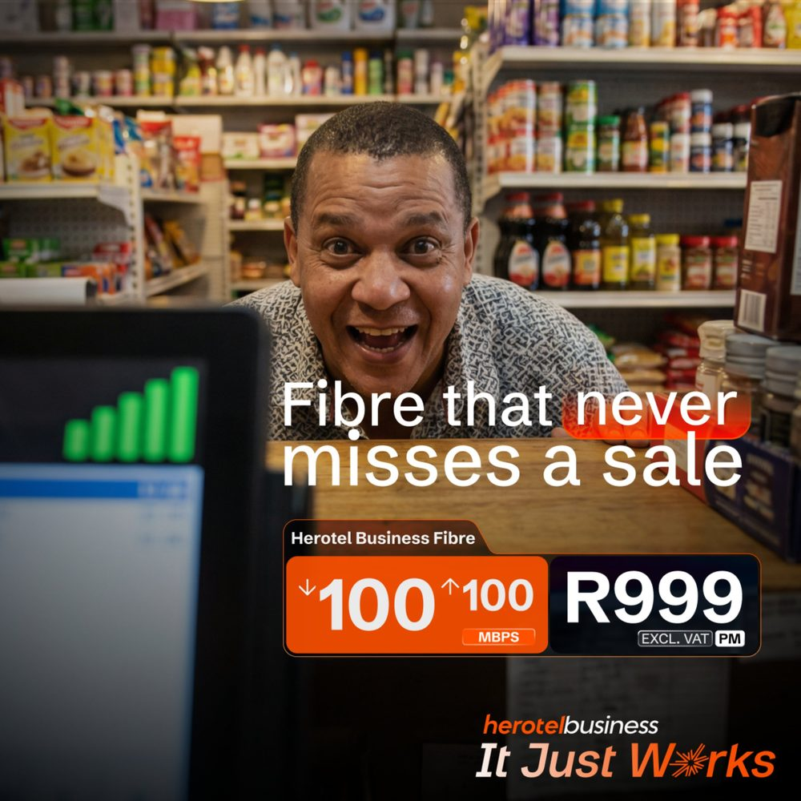
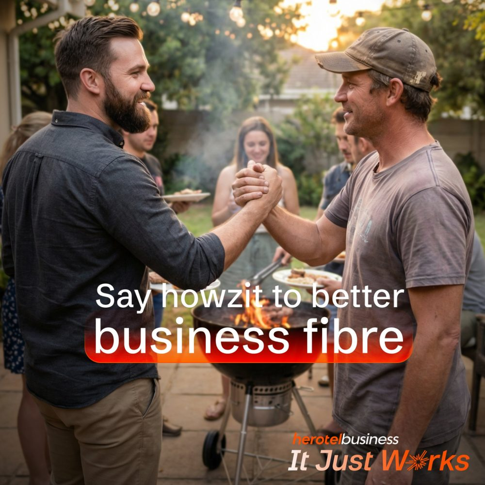
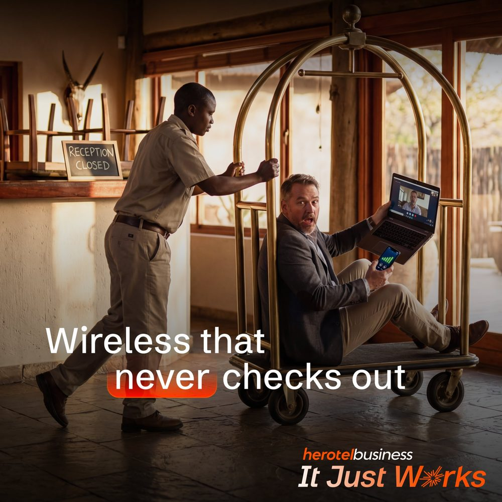
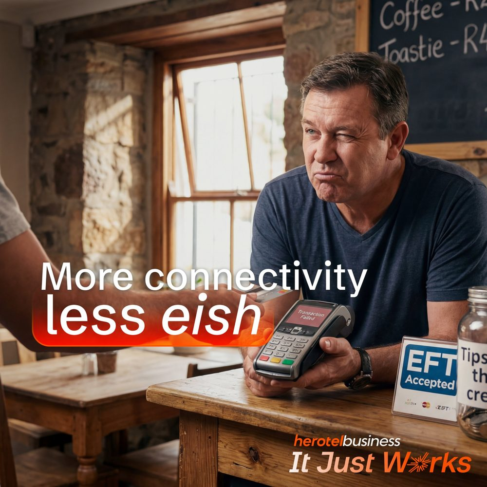
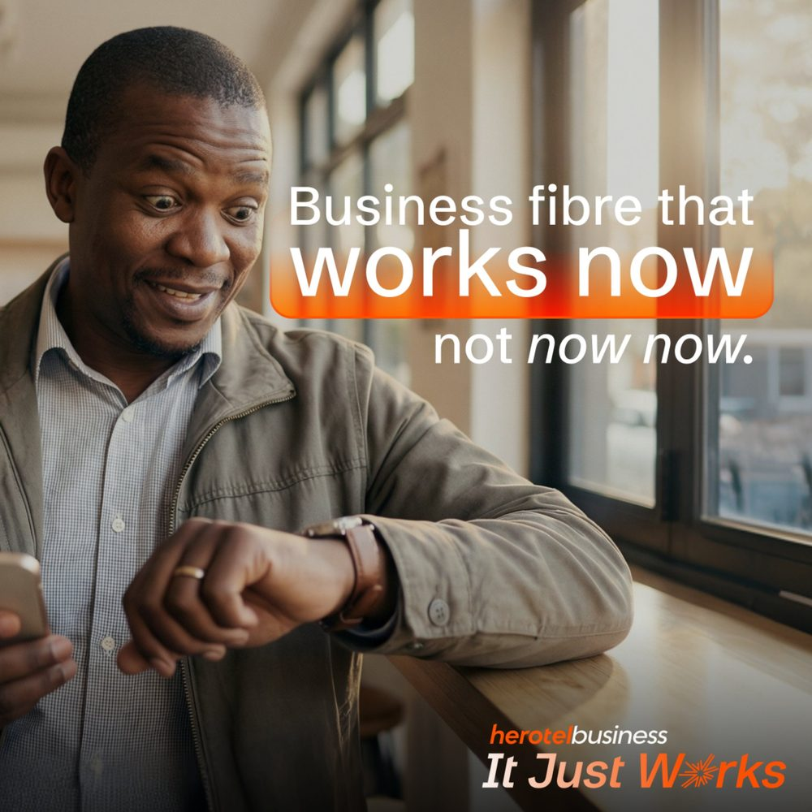

Herotel Business
A structured digital approach to grow an ISP’s SME customer base in a competitive B2B market, built around the brand platform “It Just Works.”

The approach
Paid and organic social campaigns aligned to clear commercial intent, driving targeted traffic into defined conversion pathways.
Herotel Business needed to reach small and medium enterprises across regional South African markets and convert them into qualified leads. The work spanned campaign architecture, audience segmentation, and copywriting across Google Performance Max, YouTube, LinkedIn, and Meta, with each channel mapped to a distinct stage of commercial intent.
The creative platform leaned into local language and everyday business moments, the shop that can’t miss a sale, the lodge that needs wireless that never checks out, the café tired of failed card machines, pairing recognisable South African humour with a clear product promise and price. The supporting website functioned as the lead-capture hub at the centre of the broader campaign ecosystem.
What I did
- Campaign architecture across Google Performance Max, YouTube, and Meta
- Paid and organic social strategy and management
- Audience segmentation by region and commercial intent
- Ad copywriting and creative direction
- Website lead-capture flow coordination
- Performance reporting and analytics across the funnel
- Ongoing optimisation based on campaign data
Campaign work





Reach, traffic, and conversion at scale.
Performance across a four-month flight (March–June 2026) in the Herotel region, spanning brand awareness, acquisition, and conversion.
7.3M+
Paid impressions across LinkedIn & Meta
69,904
Total website visitors
↑ 131.3%
30,243
Google Ads clicks
↑ 325.7%
1,326
Contact form submissions
↑ 605.3%
341
Coverage checks initiated
↑ 9.6%
366
New LinkedIn followers
↑ 116.6%